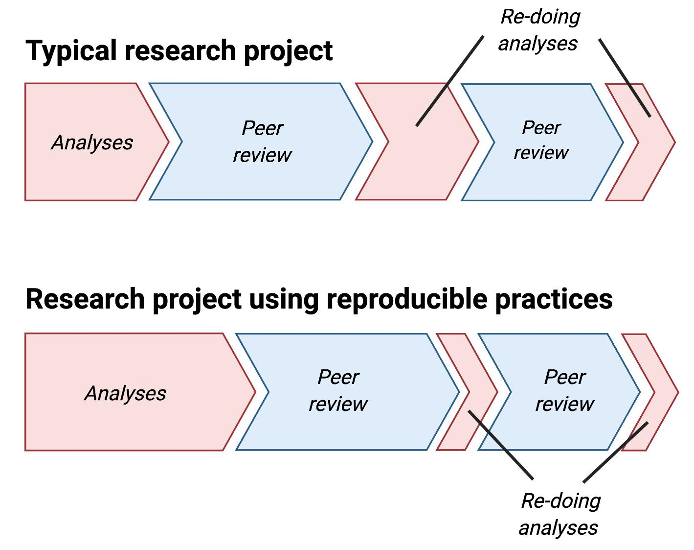
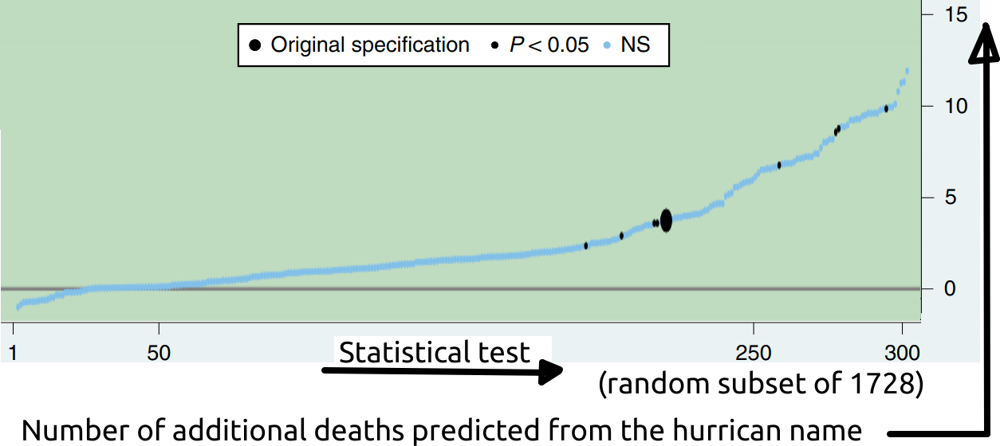

The pros and cons of Open Sciece
0 This presentation
https://github.com/richelbilderbeek/open_science_presentation_enlight_20240228
Both puns are unintended üòé!
1 Goal
To share some insights of my local Open Science community, with the hope you will share in the future too.
2 Overview
- who I am
- Open Science Uppsala community
- Open Science insights from a literature search
- Open Science insights from talks
3 Me
3.1 How to pronounce my name?
| Language | Pronounciation |
|---|---|
| Dutch | ‘Rie-sjel’ |
| English | ‘Rea-shell’ |
| French | ‘Richèl’ |
| German | ‘Ri-shäll’ |
| Swedish | ‘Ri-kjell’ |
3.2 What I do

- support of researchers
- founder of Open Science Uppsala
- https://github.com/richelbilderbeek
- 1.75 postdocs
3.3 What I think
| Name | My suggested name | My reasoning |
|---|---|---|
| Open Science | Science (1) | Open Science is a pleonasm [*] |
| Regular science | F science | Not good enough to pass |
- Registered reports rule! Always!
- [*] pleonasms: a free gift, a big giant, an actual fact, four different species, nine seperate cars
4 Open Science terminology
4.1 My Open Science definition
- The UNESCO definition (2)
- My summary of it: ‘doing science openly everywhere possible’
Source: https://en.wikipedia.org/wiki/File:Logo_UNESCO_2021.svg
4.2 Open Science definition 1/2 (2)
[O]pen science is defined as an inclusive construct that combines various movements and practices aiming to make multilingual scientific knowledge openly available, accessible and reusable for everyone, to increase scientific collaborations and sharing of information for the benefits of science and society, and to open the processes of scientific knowledge creation, evaluation and communication to societal actors beyond the traditional scientific community.
4.3 Open Science definition 2/2 (2)
It comprises all scientific disciplines and aspects of scholarly practices, including basic and applied sciences, natural and social sciences and the humanities, and it builds on the following key pillars: open scientific knowledge, open science infrastructures, science communication, open engagement of societal actors and open dialogue with other knowledge systems.
4.4 Open Science overview
Source: https://en.wikipedia.org/wiki/File:Osc2021-unesco-open-science-no-gray.png
4.5 Registered reports (3)
Source: https://osf.io/ftkq8
4.6 Registered reports (3)
- pre-registration: to register a study before results
- registered report: a pre-registration that passed peer-review with publication guarantee
5 The literature
Source: https://osf.io/ftkq8
Too bad! This is unsupported by the literature üòï
5.1 Cons of Open Access
5.2 Cons of Open Data
5.3 Cons of Open Methods
- takes more time (7) (6)
- may diminish qualitative methodologies for the sake of reproducibility (5)
- Open Science does not improve statistical power (9)
- lack of standards for sharing research materials (6)
- cultural and institutional constraints (6)
- are ‘how to do research’, not ‘what to research’ (9)
- may be infeasible, e.g. preregistrations (9)
5.4 Cons of Open Software
5.5 Cons of Open Evaluation
5.6 Cons of Open Infrastructure
5.7 But …
5.8 Pro 1: F science is a problem (10)
⚠️ there exists a version with incorrect/inflated numbers!
5.9 Pro 2: reduce publication bias (7)

- The file drawer problem
- Registered reports: publish part of paper before collecting data
5.10 Pro 3: better papers 1/3 (11)
5.3 versus 6.3 (on a 10 point scale) for ‘Quality of methods’, a 19% increase
5.11 Pro 3: better papers 2/3 (11)
5.12 Pro 3: better papers 3/3 (11)
6 The Open Science Uppsala community
6.1 Question 1
Who lives in a town with a local community?
6.2 Question 2
Who has visited that local community at least once?
6.3 My statement
community + literature > 2 * literature, if not working on Open Science as a scientist
6.4 Open Science Uppsala goals

- teach
- discuss
- English
- regularly
- everyone
- Uppsala
- free
- publicly
- scholarly
6.5 It takes time to setup an infrastructure


6.6 Open may be unfair to companies
A company can be built around a non-sharable resource. It would be unfair to share that resource.
See also (5)
6.7 Open source alleviates constraints
Openly develop useful software and avoiding bureaucracy helps your software getting used
See also (6) on cultural and institutional constraints.
6.8 Qualitative research is different
Replication does not make sense for qualitative papers, (e.g. ‘What is democracy?’), so those fields need to be judged differently.
See also (9).
6.9 Citizen science helps
Achieving statistical power ignores the individual. Citizen science helps find strong effects in few individuals.
6.10 Preregistration with statistical power 1/2

One can do a specification curve analysis in a pre-registered study to keep statistical power
6.11 Preregistration with statistical power 2/2 (13)
6.12 Science is more complex 1/4
- Gustav Nilsonne
- Even if data is open, different teams can draw opposite conclusions with high confidence (14)
- This makes interpreting results even harder!
6.13 Science is more complex 2/4 (14)
Hypotheses: ‘There is [an effect] in [a brain area] between treatment A and B’
6.14 Science is more complex 3/4 (14)
6.15 Science is more complex 4/4 (14)
And we are confident! Compare hypothesis 2 for team 2 and 4!
6.16 Bias for preregistration
Good science means never needing to say ‘trust me’. Simine Vazire
- My bias: likelier to believe open science papers, especially preregistrations
- Please ask me to participate in your experiment with hypothesis ‘Mock papers labeled as preregistrations pass peer review more often’!
6.17 Cultural limits Open infrastructure 1/4
My worry:
- Cultural constraints limit (well-willing!) development of Open infrastructure
- Procedure-first, instead of scientists-first
- Please ask me to participate in your experiment with title ‘The relation between administrative load and open data published over multiple countries’
6.18 Cultural limits Open infrastructure 2/4
What a Swedish life-science scientist needs to do (example from https://www.scilifelab.se/data/repository/submission/):
- Read Submission Guidelines
- Submit (many steps)
- Wait for a human to review
See also (15)
6.19 Cultural limits Open infrastructure 3/4
What I want:
- dump the data in 5 minutes
- get direct automated review that can be ignored
- be contacted later
- data steward does most of the work
6.20 Cultural limits Open infrastructure 4/4
My recommendation table in Sweden today:
| Open Science | Admin | Publish FAIR data? |
|---|---|---|
| Love | - | Yes |
| Like | Dislike | No |
| Like | Less than dislike | Yes |
| Less than like | - | No |
7 Another community
7.1 Lack of institutional support
Previous ENLIGHT webinar! 602 researchers. https://zenodo.org/records/10528857
7.2 How to support
8 Discussion
- I hope to have convinced you that …
community + literature > 2 * literature, if not working on Open Science as a scientist
- … is true, because people have broader ideas than you search the literature for
- ENLIGHT is a community too!
- Please enlighten me with more references to the literature!